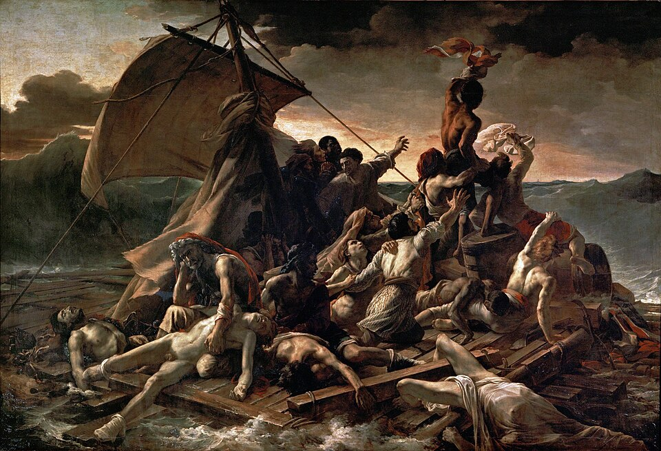

Description
Le Radeau de la Méduse est une peinture à l'huile sur toile, réalisée de 1818 à 1819 par le peintre et lithographe romantique français Théodore Géricault (1791-1824).
Son titre initial, donné par Géricault lors de sa première présentation, est Scène d'un naufrage. Ce tableau, de très grande dimension (environ 5 m de haut pour 7 m de large), représente un épisode tragique de l'histoire de la marine coloniale française : le naufrage de la frégate Méduse. Celle-ci est chargée d'acheminer le matériel administratif, les fonctionnaires et les militaires affectés à ce qui deviendra la colonie du Sénégal. À la suite d’une erreur de navigation, elle s'échoue le 2 juillet 1816 sur un banc de sable, un obstacle bien connu des navigateurs situé à une soixantaine de kilomètres des côtes de l'actuelle Mauritanie. La quasi-totalité des passagers et de l’équipage quitte l’épave le 4 ou le 5 juillet en embarquant sur quatre canots, deux chaloupes et un grand radeau de fortune construit à la hâte : au moins 147 personnes se maintiennent à la surface de l'eau sur ce radeau qui est abandonné en pleine mer par les six autres embarcations pourtant censées le remorquer ; seules quinze personnes sont secourues douze ou treize jours plus tard, le 17 juillet, par l'Argus, un brick revenu en direction de l’épave ; les autres sont mortes sur le radeau et ont été jetées à la mer après avoir enduré la faim, la déshydratation, la folie et même l'anthropophagie. À bord de l'Argus, cinq des survivants meurent néanmoins en route, ou peu après leur arrivée à Saint-Louis.
Le Radeau de la Méduse présente une certaine continuité avec les courants picturaux antérieurs au romantisme, notamment dans le choix du sujet et le caractère dramatique de la représentation, mais rompt de manière nette avec l'ordre et la quiétude de la peinture néo-classique. En choisissant de représenter cet épisode tragique pour sa première œuvre d'importance, Géricault, âgé de 27 ans, a conscience que le caractère récent du naufrage suscitera l'intérêt du public et lui permettra de lancer sa jeune carrière. Cependant, l'artiste s'est également pris de fascination pour cet événement et réalise ainsi d'abondantes recherches préparatoires et plusieurs esquisses avant d'entamer la création du tableau. Il rencontre en effet deux des survivants de la catastrophe, construit un modèle réduit très détaillé de la structure du radeau et se rend même dans des morgues et des hôpitaux afin de voir de ses propres yeux la couleur et la texture de la peau des morts ou des mourants.